|
West Yorkshire 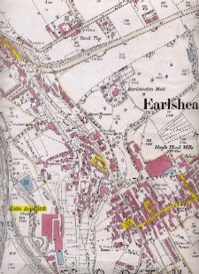 Earlsheaton, (or Soothill, Nether) was a hamlet and ecclesiastical district in the parish of Dewsbury. Read more... |
|
Inquest Report 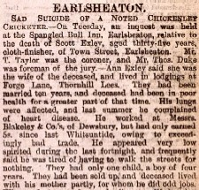 Dewsbury Reporter newspaper article dated August 31, 1889 regarding the inquest into the death of Scott Exley. Read more... |
|
West Yorkshire 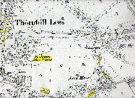 Thornhill Lees was a village and ecclesiastical parish formed in 1859 from the parishes of Dewsbury and Thornhill located one mile south from Dewsbury. Read more... |
|
Providence Bottle Works Thornhill Lees West Yorkshire 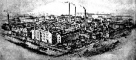 This article was published by the Dewsbury Reporter in their Men of Science supplement. Read more... |
|
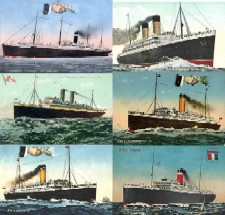 Steam ships departing from Liverpool to North America taken by our great-grandparents and their families. Read more... |
|
Saskatchewan Routes 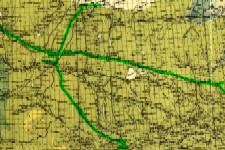 Beginning in the early spring of 1905, the Canadian Northern Railway concentrated its efforts on completing track-laying between Kamsack, Saskatchewan and Edmonton, Alberta and between Melfort and Prince Albert, Saskatchewan. Read more... |
|
Saskatchewan 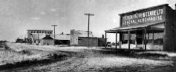 Warman got its start as a community in 1905, when Canadian Northern Railway completed track-laying between Kamsack and Edmonton. Read more... |
|
Saskatchewan 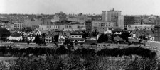 Saskatoon, a commercial and educational centre in the province of Saskatchewan, is situated on the banks of the South Saskatchewan River. Read more... |
|
Saskatchewan  Lumsden is located in the heart of the Qu'Appelle Valley, 19 miles northwest of Regina. Read more... |
Ann Exley was born in Earlsheaton, just east of Dewsbury, on November 28, 1856. Her parents were Samuel Exley, who was born in 1826 in Earlsheaton and Mary Ann Ledgard, who was born in 1829 in Lower Whitley, south of Dewsbury. Samuel and Mary Ann married October 23, 1849 at the All Saints Church in Dewsbury. Samuel was a clothier. When Ann was born, she had an older brother Joshua, who was six years of age, and two sisters: Hannah, four years of age, and Sarah Jane, two years of age. In 1858, Ann’s younger sister Lavinia was born. In 1860, Ann’s younger sister Phoebe was born. In 1861, Ann’s family was living on Main Street in Earlsheaton. Ann’s younger brother William Henry was born in 1862. Another brother, Ledgard was born the next year in 1863. Ann’s parents continued to have children, daughters Selina in 1866 and Agnes in 1868, and a son Mark was born in 1870. By 1871, Ann lived with her parents on Town Street (formally Main Street) in Earlsheaton, but later moved with her family to Exleys Yard. Later in 1871, their last child Mary Ellen was born. All of Samuel and May Ann’s children were born in Earlsheaton.
Scott Exley was born March 30, 1854, also in Earlsheaton. His parents were Francis Exley, who was born in 1822 in Earlsheaton and Ann Scott, who was born in 1827 in Earlsheaton. Frank was a woolen weaver. When Scott was born, he had an older sister, Anna Maria who was eight years of age and an older brother Hiram, who was five years of age and a brother named Hiram who was born and died in 1846. In 1857, Scott’s younger sister Mary Jane was born. In 1859, Scott’s younger brother William Henry was born. In 1861, Scott’s youngest sister Ada was born. In 1861, Scott’s family was living on Bedlam, just off Town Green, in Earlsheaton. In 1864, Scott’s youngest brother John was born. By 1871, Scott lived with his parents on Town Street (formally Main Street) in Earlsheaton, but later moved with his family to Exleys Yard. All of Francis and Ann’s children were born in Earlsheaton.
Scott’s older brother Hiram married Elizabeth Wildsmith in the autumn of 1870 in the Dewsbury area. They had three daughters, Annie born in May 1871 in Earlsheaton, Sarah born in November 1873 in Mirfield and Kate born in March 1878 in Earlsheaton.
Ann’s older sister Hannah married Richard Binks in 1873 at St Peter’s Parish Church in Earlsheaton. They had five children, Mary Emily born in 1874 in Earlsheaton, Lavinia born in 1879 in Earlsheaton, Exley Ledgard born in 1883 in Earlsheaton, John Richard born in 1886 in Earlsheaton and Lillian born in 1890 in Drightington.
Ann’s older sister Sarah Jane married Herbert Kitson in 1875 in Dewsbury. They had two sons, Luke born 1876 in Earlsheaton, and Albert born in 1878 in Earlsheaton.
Ann’s younger sister Lavinia died in 1876 in the Earlsheaton at seventeen years of age.
Scott and Ann were second cousins (as their grandfathers were brothers), but that did not deter them from beginning a relationship which led to marriage on September 29, 1877 at the Parish Church in Dewsbury. The young couple continued to live at Exleys Yard after their marriage, but later moved back to Town Street in Earlsheaton. Scott was a cloth-finisher on a power loom and a noted Chickenley Cricketer.
Ann’s older brother Joshua married Emma Hill in 1880 in the Dewsbury area. Emma already had a son Arthur Hill born in 1866 in Batley Carr. They had one daughter Sarah Emma born in 1883 in Earlsheaton.
Ann’s younger brother William Henry died in the Dewsbury area in 1880 at eighteen years of age.
| 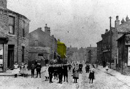 Town Street, Earlsheaton Exleys Yard Area Highlighted |
Scott’s younger sister Ada married Arthur Denham Brooke in 1881 in the Dewsbury area. They had three children, Joseph Ernest born in 1882 in Earlsheaton, Lewis Exley born in 1885 in Earlsheaton and Dora born in 1897 in Earlsheaton.
Ann’s older sister Sarah Jane Kitson died in 1881 in Earlsheaton at twenty-six years of age.
Scott’s brother-in-law Arthur Denham Brooke visited the United States, departing Liverpool on April 28, 1883 on the SS British Princess and arriving in Philadelphia on May 10, 1883. He later returned to England and his family.
Scott and Ann’s first and only child was born close to eight years into their marriage. Sam Exley was born April 4, 1885 on Town Street in Earlsheaton, and was baptized August 9, 1885 at St Peter’s Church in Earlsheaton. Scott registered Sam’s birth on May 16, 1885 at the Dewsbury Registrar’s Office.
Ann’s younger sister Phoebe married John William Lawton in 1885 at St Peter’s Church in Earlsheaton. They had six children, Amelia born in 1885, George born in 1887, Albert born in 1889, Alfred born in 1891, Clifford born in 1897, and Percy born in 1899. All of their children were born in Earlsheaton.
Scott’s older brother Hiram and his family immigrated to the United States, departing about August 25, 1885 from Liverpool on the Lord Clive and arriving in Philadelphia on September 7, 1885. Hiram and Elizabeth and their three children decided to reside in Philadelphia.
Ann’s younger sister Selina married Alfred Bland in 1886 in the Dewsbury area. They had one child, Emma born in 1887 in Earlsheaton.
Scott’s younger brother John married Martha Annie Scott in 1886 in the Dewsbury area. They had one child, Elsie born in 1887 in Earlsheaton.
Ann’s younger brother Ledgard married Emma Castle at St Peter’s Church in Earlsheaton. Their first child Lizzie Constance was born the Dewsbury in February 1888. Emma and Lizzie followed Ledgard, departing from Liverpool July 14, 1888 on the British Prince. During their voyage, Lizzie became very sick. After their arrival in Philadelphia on July 24, 1888, Lizzie’s health worsened, and she died eleven days later on August 4, 1888. Their second child Frank was born in 1889 in Philadelphia and died in 1892 in Philadelphia. Their third child Ralph was born in 1892 in Philadelphia and died there twenty one days later. Their fourth child Mary was born in 1893 in Philadelphia soon after her brother’s deaths. In about 1895, Ledgard and his family returned to Dewsbury. Their fifth child William Henry was born in 1896 in Dewsbury. Their sixth child Abel Castle was born in 1900 in Dewsbury. In 1901, Ledgard and his family lived at 3 Wellington Place in Dewsbury.
When Sam was only four years old, Scott Exley drowned in Little Royd Mill Dam on August 25, 1889 in Earlsheaton. He was underwater for 12 hours. Scott was only 35 years old when he died. At the inquest held at the Spangled Bull Inn in Earlsheaton, the jury’s verdict was that Scott had committed suicide whilst of unsound mind. Scott had been in poor heath for several years, with lung problems and heart disease, and appeared very low spirited during the last two weeks of his life and frequently said he was tired of having to walk the streets for nothing. He had earned very little during the last several months, but his life was insured.
Ann’s younger sister Agnes married Thomas Henry Glew at St Peter’s Church in Earlsheaton. They had four children, George born in 1892 in Earlsheaton, William Henry born in 1893 in Dewsbury, Elsie born in 1898 in Dewsbury and Fred born in 1901 in Ossett.
Scott’s younger brother William Henry married Annie Green about 1890 in the Dewsbury area. They had three sons, George Henry born in 1893 in Dewsbury, Ernest born 1896 in Dewsbury and Arthur born in 1900 in Dewsbury.
| 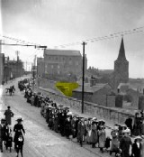 Kirk House Church Hill Earlsheaton Ann Exley Home 1891 |
By 1891, the widow Ann Exley and the fatherless Sam Exley still lived in Earlsheaton on Church Hill in Kirk House. Ann was employed as a shopkeeper. Ann needed a husband and a father for her son. She met Edmund Watson in Dewsbury. He had married Isabella Parker in the fall of 1887, and they had a son named Charles William Watson in the spring of 1891 in Ravensthorpe, a village just west of Dewsbury. Isabella died in the autumn of 1893, leaving Edmund to raise his son on his own. Edmund needed a wife. Edmund and Ann needed each other. Edmund Watson and Ann Exley married December 8, 1894 at St Mark’s Church in Dewsbury. Their marriage was witnessed by Ann’s older brother Joshua Exley and her younger sister Selina Bland.
Edmund Watson was born March 17, 1868 on Fall Lane in Dewsbury. His parents were Charles Watson, a butler, and Martha Hewitt. Edmund had four siblings, Sarah born in 1861 in Flockton, John born in 1865 in Wakefield, Mary born in 1870 in Dewsbury, and Gerald born in 1979 in Dewsbury.
Scott’s younger sister Ada and her family visited the United States, departing from Liverpool on May 16, 1896 and arriving in New York on May 25, 1896. The family had returned to England by early 1897.
In 1901, Ann’s sister Hannah and her husband Richard Binks, and their four youngest children immigrated to Canada. They boarded the SS Tunisian in Liverpool on May 2, 1901 and arrived in Montreal on May 10, 1901 on their way to Winnipeg. Most of the family settled in the Borden area of Saskatchewan, north-west of Saskatoon. Their youngest son John Richard homesteaded in the Kamsack area in eastern Saskatchewan.
By 1901, Edmund, Ann and their sons were living on 10 Lees Grove in Thornhill Lees, just south of Dewsbury. Even though Edmund had a good job as an engine man at the Savile Town Gas Works, he was lured by the promise of a new beginning in Canada.
| 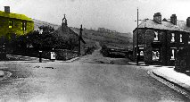 Lees Moor Thornhill Lees Watson's Home 1901 |
On May 31, 1906, Edmund boarded the S.S. Tunisian in Liverpool. He arrived in Quebec City on June 8, 1906, on his way to Veregin, Saskatchewan to work on the Canadian Northern Railroad as a section hand. Ann and Edmund’s son Charles William remained at home in Thornhill Lees until Edmund sent word that he was settled. By the autumn of 1906, Edmund had moved to Aberdeen, Saskatchewan, a section point for the Canadian Northern Railway. On October 11, 1906, Ann and Charles William boarded the S.S. Dominion in Liverpool. They arrived in Montreal on October 21, 1906, on their way to Aberdeen, Saskatchewan. They eventually settled in Warman, Saskatchewan, just north of Saskatoon.
| 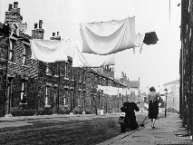 South Elmwood Street Dewsbury Sam Exley's Home 1907 |
Sam Exley had remained in the Dewsbury area working for the Providence Bottle Works in Thornhill Lees as a fireman. When Ann and Charles William left for Canada, Sam moved to 8 South Elmwood Street in Dewsbury. While living in Thornhill Lees, Sam had become friends with William Flowers who lived in the same neighbourhood as he did and also worked at Providence Bottle Works. Sam had become interested in William Flower’s older sister Mary Emily Imeson.
| 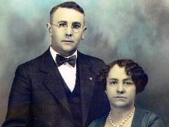 Sam Exley & Mary Emily Imeson Marriage Day |
On January 5, 1907, Sam Exley (age 21) married Emily (age 25) at the Dewsbury Registrar Office. Sam and Emily then moved to 4 Forest Cottages on Lees Hall Road in Thornhill Lees. Later that year, Sam and Emily had their first child named Percy Scott Exley born November 4, 1907 in Thornhill Lees. Sam continued to work at Providence Bottle Works while Emily looked after her baby. About two years later, Sam and Emily had their second child named William born November 13, 1909 in Thornhill Lees.
Sam and Emily, along with their two children immigrated to Canada in March 1910. Sam’s step-father Edmund Watson had arranged for a job working for the Canadian Northern Railway as section man. On March 10, 1910, they left Liverpool on the SS Tunisian of the Allan Lines, the same ship that Sam’s step-father had taken, and arrived in Halifax, Nova Scotia March 18, 1910. The family traveled by train from Halifax to Warman, Saskatchewan to join his parents Edmund and Ann Watson.
| 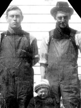 William Flowers Percy Exley Sam Exley Saskatoon 1911 |
Warman was a railroad town at the junction of two main lines with plenty of opportunity for new-comers. As a result, Edmund and Ann encouraged their son Sam to follow them to Canada. Edmund and Charles William were both working for the railway as section men.
William Flowers decided that he should travel to Canada, to visit with his sister and best friend Sam Exley. He departed Liverpool on May 14, 1910 on the SS Megantic, a White Star Dominion liner. He arrived in Montreal about eight days later. He traveled by train via Winnipeg to Warman, Saskatchewan where he met up with Sam Exley and his sister Emily. He very quickly had a job with the Canadian Northern Railway where Sam worked.
By early 1911, Sam Exley and his family and William Flowers had been transferred to Lumsden, Saskatchewan just north-west of Regina. In April, William and Emily’s three siblings George, Joseph and Lily arrived in Lumsden from Saint John, New Brunswick. They had departed Saint John after an extended stay when their mother and youngest brother Arthur had boarded the Empress of Ireland for their return trip to England. George and Joseph Flowers soon had a job with the Canadian Northern Railway as section men. By June 1911, the three Flowers’ brothers were transferred to Warman, where they made contact with the Edmund, Ann and Willie Watson. Lily remained living with her sister Emily. She helped Emily with looking after the kids as well as making dresses.
| 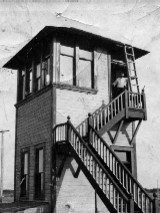 Charles William Watson South Saskatoon Signal Tower c1913 |
By the autumn of 1911, the Flowers’ siblings were missing their homeland, and decided to return to Yorkshire as soon as they could make arrangements. Ann Watson decided that she would travel with them to visit family still living in England. They traveled by train to Quebec City, and sailed back to Liverpool on the Empress of Britain. They departed on November 3, 1911 and arrived in Liverpool on November 10, 1911. It was a rough crossing. They arrived back home in Thornhill Lees virtually penniless. They later learned that the Empress of Ireland had collided with another ship and sank in the Gulf of Saint Lawrence, and recalled that Margaret and Arthur had took that same ship three years earlier.
In 1912, Edmund was working as a signalman for the Canadian Pacific Railway and residing in Sutherland, just east of Saskatoon. A year after Ann had gone to visit England, Edmund decided it was time for his own visit to his homeland. Edmund and Willie took the train from Saskatoon to Montreal. They departed Montreal on the SS Magantic on November 22, 1912 and arrived in Liverpool December 1, 1912. They were able to visit family and friends, and of course catch-up with Ann. They remained in England for the winter and returned to Canada the next spring. On April 19, 1913, Edmund and Ann Watson departed from Liverpool and the SS Tunisian and arrived in Montreal April 27, 1913. They traveled back to Saskatoon by train.
| 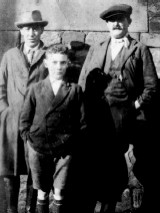 Sam Exley Percy Exley Edmund Watson c1919 |
By 1912, Sam Exley and family had returned to Saskatoon. Sam was an engineer working for the Saskatoon Brick & Supply Co. He was residing at 328 Ave G South in Saskatoon. In 1913, Sam Exley was an engineer working for the Empire Hotel in Saskatoon. He was residing at 1021 Ave K South in Saskatoon.
| 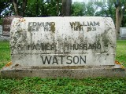 Edmund Watson Willie Watson Ann Watson Headstone c1930 |
After Edmund and Ann returned to Saskatoon, Edmund worked for the Canadian Northern Railroad as a signalman at the diamond near 3rd Ave North and 33rd Street in Saskatoon. They resided at the foot of Duchess Street in Saskatoon in a home that eventually was numbered 306 Duchess Street. Edmund and Ann retired around 1929, continuing to live at the same address on Duchess Street.
Edmund died at age 62 on October 26, 1930 in Saskatoon, and was buried at Woodlawn Cemetery in Saskatoon on October 28, 1930.
Edmund's son Charles William died June 8, 1931 at only fourty years of age. Ann buried Charles William on June 9, 1931 at Woodlawn Cemetery.
Ann died at age 77 on August 27, 1934 and was buried at Woodlawn August 30, 1934. Burial arrangements were handled by her only child Sam Watson Exley.